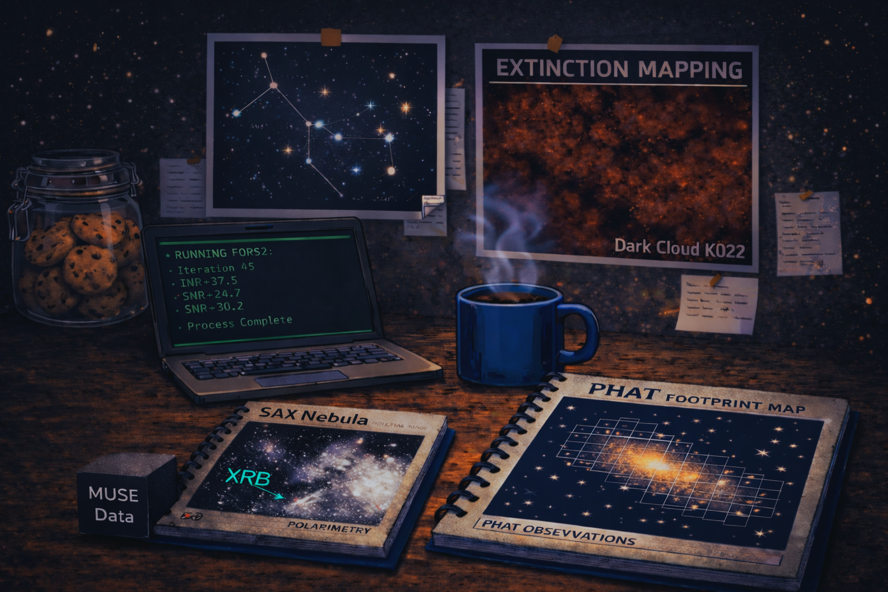

I’m a PhD student in astrophysics at the Centre for Astrophysics Research (CAR), University of Hertfordshire, and a visiting lecturer in data science.
SAX J1712.6–3739 is the only known supersonic low mass X ray binary (LMXB) with a clearly resolved bow shock nebula.
The system was discovered by my supervisor, Wiersema et al. (2009) :P
It is the first direct observational evidence for jet driven nebulae produced by fast moving LMXBs, a phenomenon that had been predicted theoretically
(Heinz 2008; Yoon et al. 2011) but remained unobserved until now!
The aim of my PhD is to build the first multiwavelength physical picture of such a system. I use I-band, Halpha polarimetry with FORS2, integral field spectroscopy from MUSE, X ray observations from Chandra and XMM Newton, and radio imaging from ATCA.
Alongside this, I also work on very cool dust extinction mapping techniques in external galaxies :D (add more)

PhD in Astrophysics
2024–
Centre for Astrophysics Research (CAR)
University of Hertfordshire
MSc in Astrophysics
2022–2023
Cardiff University
Testing Larson relations from giant molecular clouds down to infrared dark clouds.
Supervisor: Dr Ana Duarte Cabral
Teaching
2024–
Principles of Data Science (Level 4, BSc)
2025–
Data Handling and Visualisation (Level 7, MSc)
Dr Klaas Wiersema
– Principal Supervisor
Dr Martin Krause
– Second Supervisor
Dr Dom Walton
– Second Supervisor (X-ray analysis)
Dr Miika Pursiainen – FORS2 polarimetry pipeline
Dr Joseph Lyman – Muse Data reduction
Dr Jan Forbrich – Extinction Mapping